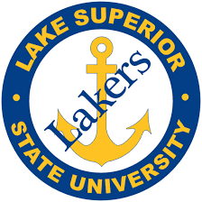

At Grand Valley's cutting-edge campus, I have had the opportunity to learn the basics of Java and Web Developement so far, as well as growing as a person thanks to the diverse array of general education classes. In the coming semesters, I will learn about 3D design, information assurance, database structures and algorithms, and many other skills vital to the IT professional and full-stack developer.

Lake Superior State University --- 2014 - 2017
Mechanical Engineering --- 2016 - 2017
Homeland Security --- 2014 - 2016
Lake Superior State University
August 2014 - August 2017
Mechincal Engineering: 2016 - 2017
Homeland Security: 2014 - 2016
I started my college journey at Lake Superior State University, a campus at the last exit before the International Bridge to Canada.
I entered my freshman year with the plan of graduating in three years with a B.A in Homeland Security, with the goal of helping
people as a police officer, and hopefully an eventual federal agent. I gained vital experience in the law enforcement field,
including an internship with the Cook County Sheriff's Office in Chicago, the second largest department in the country, and a year of working
as a Public Safety officer for my university. After these two years however, it was clear to me that it wasn't the right field for me.
I craved mental stimulation; an outlet for my creativity and a career that involved problem solving on a daily basis.
I then decided to change my field of study to Mechanical Engineering. I found great satisfaction in making things, and loved
the challenging nature of the courses. In this year of my studies, I learned manufacturing processes, CAD basics, and the
basics of materials science. Then, crucially, I took a 'C' Programming course required for engineering, and found I absolutely loved
programming. It was a way to make whatever you can imagine from scratch; the perfect test of my creativity, and a field
on the frontlines of solving the problems of today and tomorrow. After I found this love for programming, I made the decision to
chagne my major to Compuer Science, and transfer to Grand Valley State University, an profoundly esteemed institution closer to home.